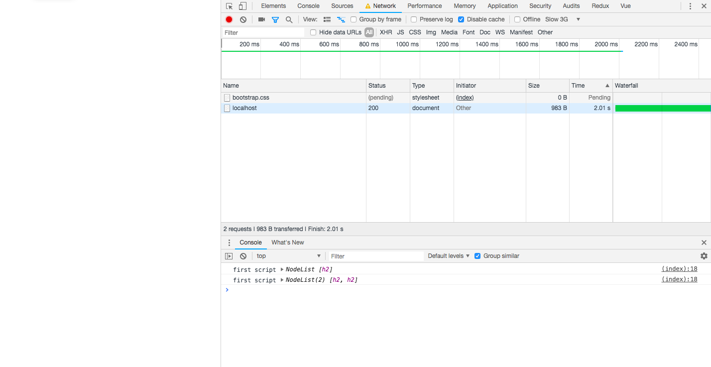
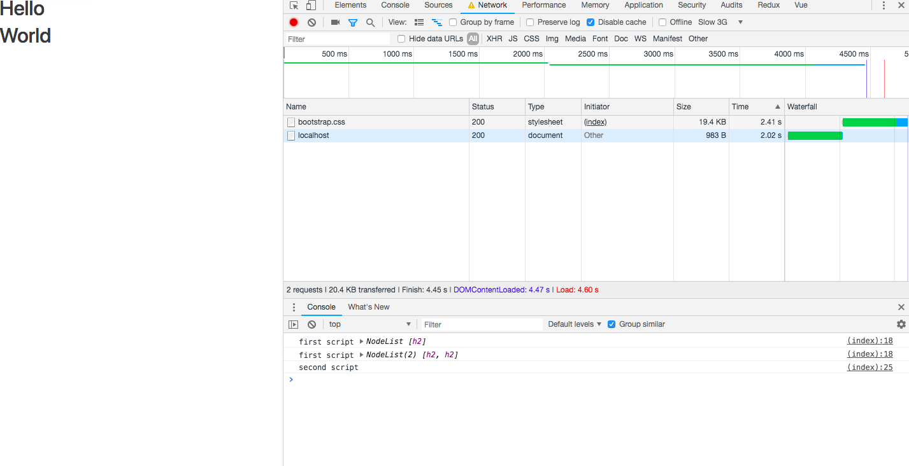
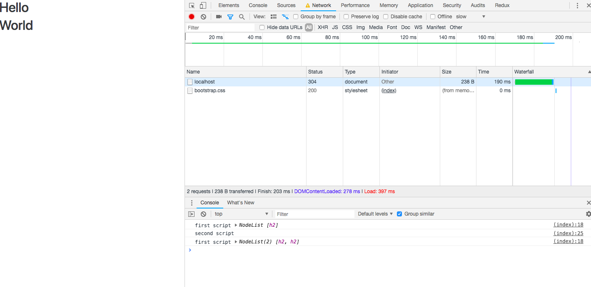
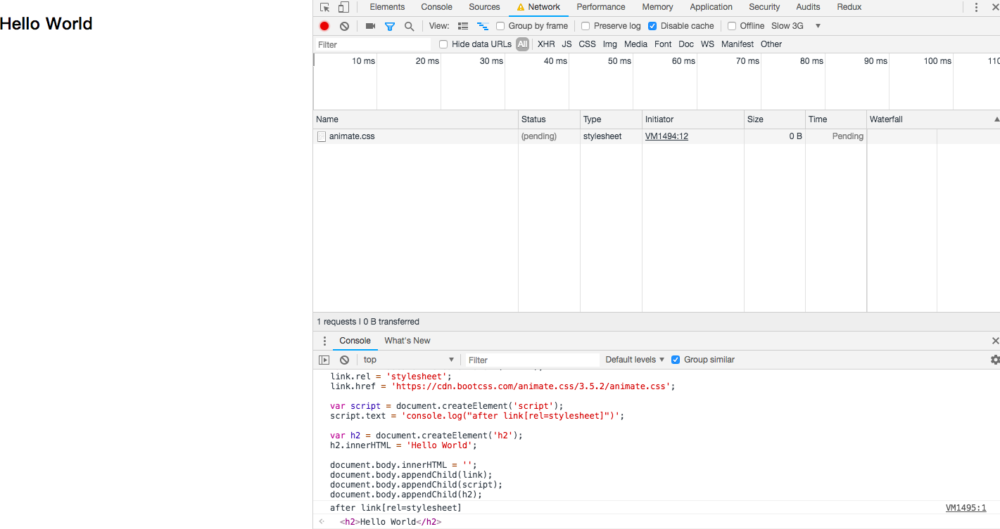
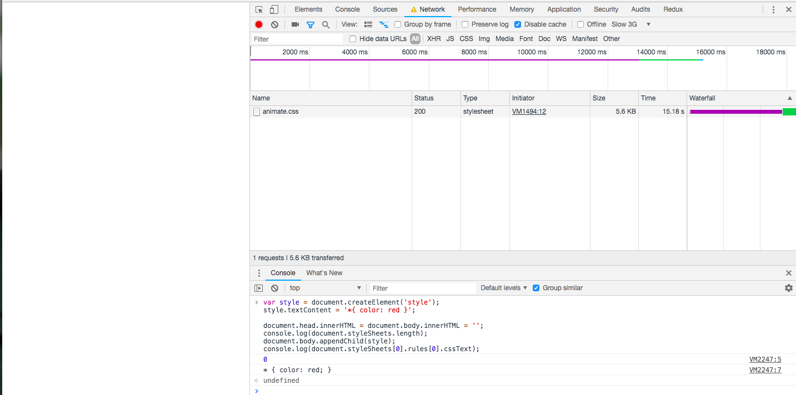
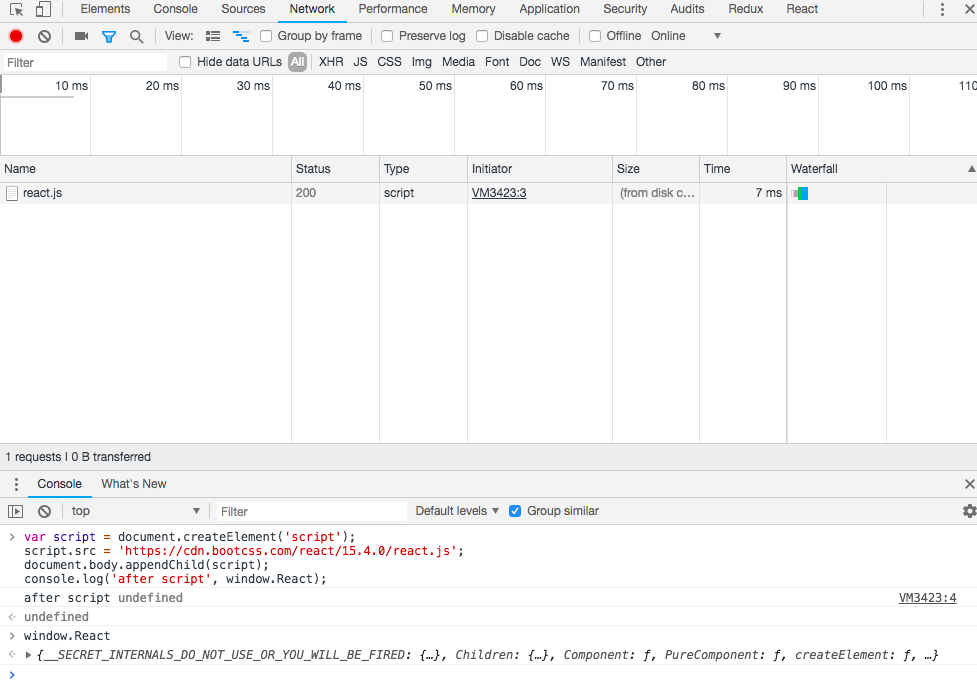
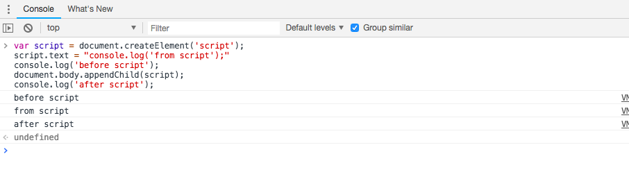

首先区分一下，什么是同步渲染和异步渲染。
同步：浏览器访问网址，浏览器创建新的tabpage，新的内存块，加载页面的全部资源并渲染全部资源。但只要有页面中的任何一个操作，就会从新的开端全部在创建请求渲染一次，浏览器自己控制的http。
异步：用之前已经渲染过的页面数据，与后台交互数据不需要重新来渲染页面，实现对页面的部分更新。这里主要讲动态插入 HTML 标签的异步渲染。
同步渲染
一般我们会把样式写在 HTML 头部，页面脚本放在 </body> 之前，因为样式和脚本会阻塞 DOM 渲染，但是样式不阻塞 DOM 解析。
以下是 Webkit 解析资源，最终呈现页面的主流程

脚本和样式表的处理顺序
脚本
解析 HTML 文件过程中，解析器遇到 <script>标记时立即解析并执行脚本。文档的解析将停止，直到脚本执行完毕。如果脚本是外部的，那么解析过程会停止，直到从网络同步抓取资源完成后再继续。此模型已经使用了多年，也在 HTML4 和 HTML5 规范中进行了指定。作者也可以将脚本标注为“defer”，这样它就不会停止文档解析，而是等到解析结束才执行。HTML5 增加了一个选项，可将脚本标记为异步，以便由其他线程解析和执行。
预解析
WebKit 和 Firefox 都进行了这项优化。在执行脚本时，其他线程会解析文档的其余部分，找出并加载需要通过网络加载的其他资源。通过这种方式，资源可以在并行连接上加载，从而提高总体速度。请注意，预解析器不会修改 DOM 树，而是将这项工作交由主解析器处理；预解析器只会解析外部资源（例如外部脚本、样式表和图片）的引用。
样式表
另一方面，样式表有着不同的模型。理论上来说，应用样式表不会更改 DOM 树，因此似乎没有必要等待样式表并停止文档解析。但这涉及到一个问题，就是脚本在文档解析阶段会请求样式信息。如果当时还没有加载和解析样式，脚本就会获得错误的回复，这样显然会产生很多问题。这看上去是一个非典型案例，但事实上非常普遍。Firefox 在样式表加载和解析的过程中，会禁止所有脚本。而对于 WebKit 而言，仅当脚本尝试访问的样式属性可能受尚未加载的样式表影响时，它才会禁止该脚本。
CSS 阻塞 DOM 渲染
这里需要区分 DOM 解析（parsing）和 DOM 渲染 （rendering）。准确来说，是 HTML Parsing 和 DOM Rendering 。无论是外链 CSS 还是内联 CSS ，都会阻塞 Rendering ，也就是说这部分 CSS 在下载并解析结束之前，它后面的 HTML 都不会显示。这也是为什么我们把样式放在HTML内容之前，以防止被呈现内容发生样式跳动。 当然代价就是显示延迟，所以性能攸关的站点都会内联所有CSS。
CSS 阻塞 Rendering 的最直接结果，就是延迟脚本执行和 DOMContentLoaded 事件触发。但是，不同的渲染引擎对此处理不一样，Presto (Opera)就不会延迟脚本的执行。
有些情况下，可以尝试添加媒体查询来避免不必要的阻塞。 尤其是响应式站点可以做此优化：
1 | <link href="other.css" rel="stylesheet" media="(min-width: 40em)"> |
看一个栗子
1 | <!DOCTYPE html> |
在 Chrome 开发者工具中开启 Disable Cache 和 Throttling 来模拟较慢的网络。


可以看到 document(HTML) 花了 2.01s 加载，加载完成后，页面还未渲染。
第一次输出只有一个 <h2> ，说明脚本执行会阻塞 DOM 解析。
第二次输出有两个 <h2> ，说明样式不会阻塞 DOM 解析。
控制台已经打印出 h2 ，页面还是空白，说明样式会阻塞 DOM 渲染。
2.01s 后，'second script' 没有被打印出来，说明样式会阻塞脚本。
但是一般人不会去 Disable Cache ，那么如果在允许缓存的情况下，样式表已经缓存过，那句 setTimeout(printH2); 还会在样式加载结束后才打印吗？不同渲染引擎对此处理不同，前文有提到，Firefox 在样式表加载和解析的过程中，会禁止所有脚本。而对于 WebKit 而言，仅当脚本尝试访问的样式属性可能受尚未加载的样式表影响时，它才会禁止该脚本。本次实验是在 Chrome 上进行的，反复刷新了几遍后，终于有这样一个结果：

脚本阻塞 DOM 解析+渲染
同步渲染模式下，无论是内联的脚本还是外链的脚本，都会阻塞 DOM Parsing ，DOMContentLoaded 事件会被延迟，DOM Rendering 自然也被阻塞。由于 JavaScript 只会阻塞后续的 DOM，前面的 DOM 在解析完成后会被立即渲染给用户。 这也是为什么我们把脚本放在页面底部：脚本仍在下载时页面已经可以正常地显示了。
异步渲染
外链样式表
动态插入的外链样式表不阻塞 DOM Rendering ，当然也不阻塞 DOM Parsing 。
打开一个任何一个页面，在控制台输入以下代码：
1 | var link = document.createElement('link'); |
题外话：例子是直接引用参考文章的，文章中外链的 CSS 样式的 Url 里面的协议是 HTTP，在 HTTPS 的网页注入这段代码，外链会被 block 掉。https 页面中引入 http 资源的解决方式
在外链样式表还在下载时，脚本已经执行，文本也已经渲染。

内联样式表
与外链样式表不同，内联样式表会阻塞DOM解析（当然渲染也会被阻塞）。 其实不能叫阻塞啦，因为不涉及网络请求，内联样式表的解析本来就是同步的。
我们可以通过 document.styleSheets 来检测样式表是否已经解析（Parse）：
1 | var style = document.createElement('style'); |

第一处 console.log: <style> 尚未插入 DOM 树的时候，样式表的数目为零。
第二处 console.log: 插入 <style> 标签后，立刻读取被解析的 CSS 规则。
总结：
- 未插入 DOM 树的 内联样式不会被解析
- 插入后样式表会被立即解析，甚至不会进入下一个事件循环。也就是说，
document.body.appendChild(style);执行完之后，进入样式表解析。最后一句 console.log 要一直等待样式解析完成才会执行。如果样式表十分庞大，阻塞将十分明显。
外链脚本
动态插入的外部脚本的载入是异步的，不会阻塞解析或者渲染。 这意味着动态插入一个外部脚本后不可立即使用其内容，需要等待加载完毕。 例如
1 | var script = document.createElement('script'); |

window.React 会为空，等到外链资源加载完成后才可用。
内联脚本
内联脚本的表现和内联样式基本一样，阻塞 DOM parsing，阻塞后续脚本。
1 | var script = document.createElement('script'); |

资源载入事件
脚本和样式载入事件可以直接监听到，当然这只对非阻塞的资源获取有效。 需要注意的是浏览器兼容性：绝大多数情况监听 onload 和 onerror 即可， 为了支持IE浏览器，可以监听 onreadystatechange 事件。
总结：
- 未插入到 DOM 树的外链样式/脚本，不会发起网络请求，更不会对 DOM Parsing/Rendering 有什么影响。
- 同步模式下（文档已自带的 style、script 标签），内联样式表/脚本阻塞 DOM parsing ，外链样式表不阻塞 DOM parsing，但是阻塞 DOM rendering ；没有 async，defer 等标记的“裸奔”外链脚本，阻塞 DOM parsing 。
- 异步模式下（动态添加 style、script 标签）外链样式表/脚本不阻塞 DOM Parsing 和 DOM Rendering 。这意味着要等它们下载完才可用。内联样式表/脚本阻塞 DOM Parsing/Rendering ，阻塞后续脚本（不会进入事件循环，这一点和同步模式一样）。
优化
- 外链样式脚本放在
<head></head>中，因为外链样式不阻塞 DOM 解析，这样做也可以避免样式跳动。 - 对整个页面样式的调整（会触发回流）如调整 rem 计算策略的 script 脚本，可以放在
<head></head>中，这里可以用内联的方法（虽然不是最佳），阻塞后续 DOM 解析，避免样式跳动。也可以用外链脚本， 加上async标签可以让脚本的下载不占用 DOM 解析线程，在下载完后立刻执行。 - 使用 CDN 。不局限于样式和脚本，图片也可以。
- 样式、图片使用外域，因为浏览器有最大并行下载数限制。解析见Why do big sites host their images/css on external domains?
asyncdeferpreloadprefetch。前两个只能作用于脚本

没有标记加载策略的 script 和 async 都会阻塞 DOM 解析，不同在于 async 的下载相对于 DOM 解析是异步的。defer 的下载也是异步的，但是下载结束后不立刻执行，而且还会按照 script 标签的顺序执行。（这一点 async 就不能保证）。
参考文章
CSS/JS 阻塞 DOM 解析和渲染
异步渲染的下载和阻塞行为
异步渲染DOM元素的加载时机
How Browsers Work: Behind the scenes of modern web browsers #The order of processing scripts and style sheets
有一种优化，叫Preload
Tencent CDN